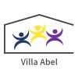
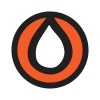
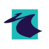
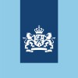

CV Stefan Duineveld
Werkervaring
| Vrijwilliger Villa Abel Sep. 2022 tot heden |
Het begeleiden van studenten met autisme met hun dagelijks werk.
|
| Junior marketing Search4Solutions  jun. 2021 |
Bijhouden van social media kanalen en artikelen (her)schrijven. |
| Forensic ICT Researcher Terre des Hommes feb. 2018 - jul. 2019 |
OSINT-onderzoek naar mogelijke seksuele uitbuiting van minderjarigen n.a.v. meldingen. |
| Afstudeerder Hogeschool Leiden mei 2017 - jan. 2018 |
Onderzoek verrichten naar benodigdheden van een forensisch lab |
| Afstudeerder TNO feb. 2016 - aug. 2016 |
Nieuwe bronnen m.b.t. cybercriminaliteit en het Dark Web identificeren en analyseren, en onderzoek doen naar mogelijke identificatiemethodes van TOR-gebruikers. |
| Stagiair Belastingdienst sep. 2014 - jan. 2015 |
Werkzaam bij het Internet Service Centre, onderdeel van de Landelijke Toezicht Organisatie.
|
Opleidingen & Cursussen
Some content in menu 1.
Nevenactiviteiten
Some content in menu 2.
Vaardigheden
Some content in menu 2.
Over Mij
Some content in menu 2.
Menu 2
Some content in menu 2.